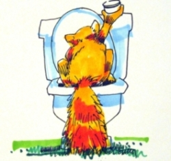
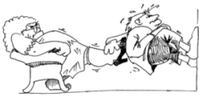

This page has usage examples for the following words:

bloadder 膀胱 ぼうこう
cystitis 膀胱炎 ぼうこうえん
edema 浮腫 ふしゅ
kidney 腎臓 じんぞう
kidney transplant 腎移植 じんいしょく
nephrosis ネフローゼ
pyelonephritis 腎盂炎 じんぞうえん
renal disease 腎臓病 じんぞうびょう
urine 尿 にょう
urology 泌尿器科 ひにょうきか
My face is puffy.
顔がむくんでいます。
かおがむくんでいます。
I feel a dull pain in my back.
背中に鈍痛があります。
せなかにどんつうがあります。
I noticed my urine was a little white this morning.
今朝、尿が白っぽく濁っていました。
けさ、にょうがしろっぽくにごっていました。
I noticed my urine was a little brown.
茶色っぽい尿がありました。
ちゃいろっぽい にょうがありました。
I noticed blood in my urine this morning.
今朝、血尿がありました。
けさ、けつにょうがありました。
I have a chronic kidney disease.
慢性の腎臓病があります。
まんせいのじんぞうびょうがあります。
I hurt my back yesterday when I fell.
昨日、横転して背中を打ちました。
きのう、おうてんして せなかをうちました。
I'm worried about my kidney.
腎臓のことが心配です。
じんぞうのことがしんぱいです。
A conversation between a patient and a doctor about the kidneys
Patient:
A friend of mine told me that his mother’s kidney is not functioning well at all, and the only option is a kidney transplant. The friend wants to offer his kidney. I hope things go well. By the way, what kind of the relationship do the kidney, the renal pelvis and the bladder have with each other? What kind of symptoms appear when the kidney fails?
友人のお母様の腎臓が悪化し、移植する他に良い治療法がないということです。友人は自分の腎臓を提供したいと言っています。うまく行くことを願っています。ところで、腎臓、腎盂、ぼうこうとの関係はどのようなものですか？また初期段階としてどのような症状が現れますか？
Doctor:
The kidneys, one on the right and the other on the left, are situated at the back side of the abdomen and shaped like a broad bean. The kidney has a very important function: it produces urine by filtering waste matters from blood and sends urine through the renal pelvis and the ureter to the bladder. Thus, waste matters are excreted outside the body. Diseases of the kidney are caused, as with other organs, by bacteria, cancer, trauma and congenital defects. The symptom that is recognized most easily is facial edema.
腎臓は、お腹の後壁の上部の背中に、空豆のような形をして、左右に二つあります。血液中から老排物をろ過し、尿を生成して腎盂、尿管を通じて、これをぼうこうに送り、対外に排出すると云う非常に重要な働きをします。腎臓の病気は、他の臓器におけると同様、細菌、癌、外傷、あるいは、生まれつきの欠損などが原因となって起こります。最も分かりやすい症状として、顔の浮腫があります。

My two cents 一言おせっかい
As described above, the kidney is the important organ removing waste matters from the body. If you have a problem, small or big, you should consult an internist or a kidney specialist.
上に述べましたように、腎臓は、身体の中から老排物を取り除く大切な器官です。どんな小さな事でも気になる時は、内科医、或いは、腎臓専門医に診てもらいましょう。
[ji02]
| © 1995-2013 NACOS International Institute. All Rights Reserved. |